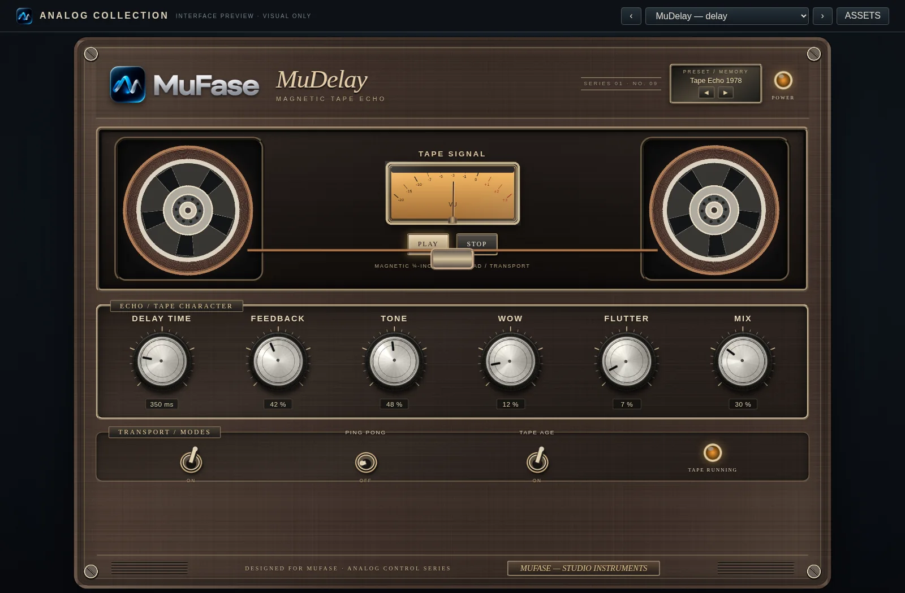
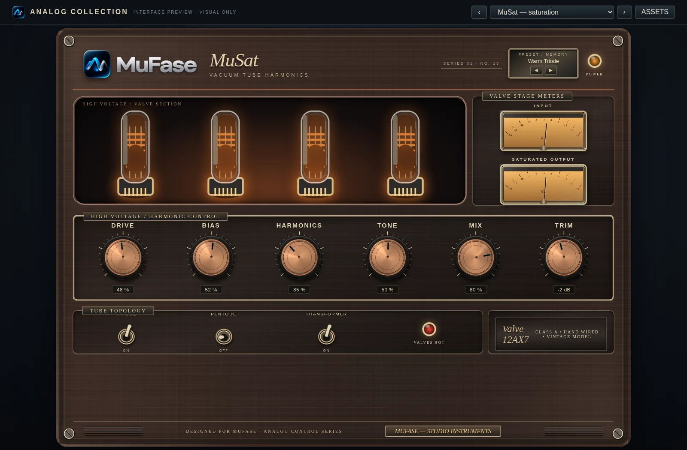
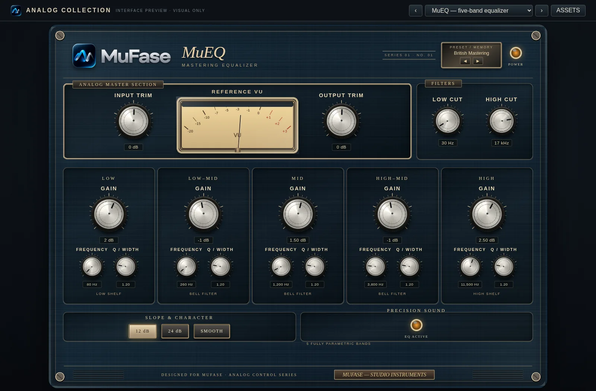

01 / TAPE
Ecos sincronizados.
MuDelay permite ajustar el tiempo de repetición, la realimentación y el balance entre señal directa y eco.

15 procesadores para ecualización, dinámica, afinación, espacio y mezcla. Descubre qué hace cada efecto, sus controles principales y cuándo utilizarlo.

Abre la ficha de cualquier efecto para conocer su procesamiento, controles principales y usos habituales. Información técnica breve, sin complicaciones.
Procesos útiles para mezclar, diseñar sonidos y controlar grabaciones. Conoce sus funciones antes de descargar la suite.
MuDelay permite ajustar el tiempo de repetición, la realimentación y el balance entre señal directa y eco.

MuSat añade color y densidad mediante saturación con Drive, Tone y Mix.

MuEQ ajusta frecuencia, ganancia y anchura de banda para corregir o realzar una pista.

Ingresa uno de los códigos de canje de MuFase Retro FX Suite y desbloquea el enlace de descarga de prueba.
Escribe o pega tu código
Valida el acceso
Descarga el archivo disponible
Por ahora el archivo descargable es una imagen de prueba. Se sustituirá por el instalador oficial cuando esté disponible.
Utiliza tu código de 15 caracteres alfanuméricos para habilitar el enlace.
El archivo actual es una imagen PNG temporal, no un instalador VST3.
15 procesadores: EQ, compresor, dinámica, filtros, afinación, reverb, gate, chorus, delay, reducción de ruido, limitador, de-esser, saturación, imagen estéreo y transientes.
La colección está orientada al formato VST3 de 64 bits para Windows 10 y versiones posteriores. La compatibilidad final depende de la compilación y las pruebas realizadas en cada DAW.
No. En esta versión de prueba, el canje descarga un PNG de demostración. Cuando esté listo el instalador, su propietario reemplazará este archivo por la versión oficial.
Este sitio está alojado de forma estática: los códigos válidos permiten repetir el acceso. La validación de un solo uso y la protección real de descargas requieren un servidor de autenticación.